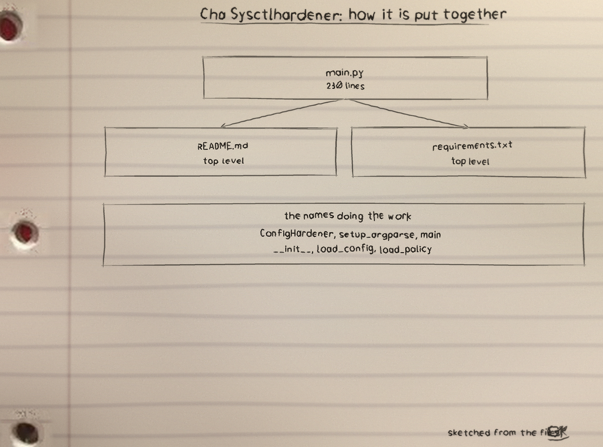
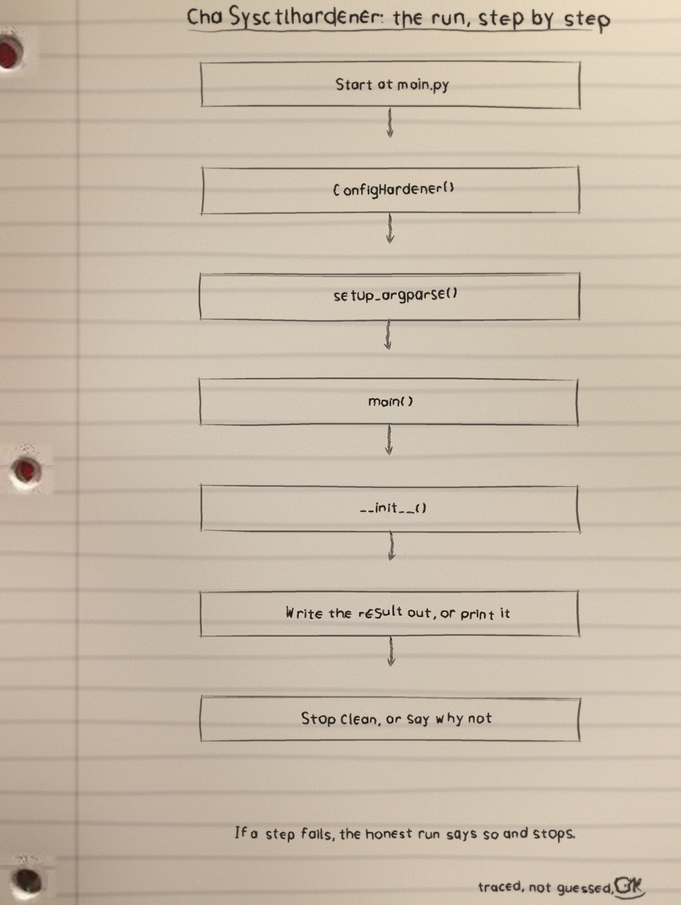
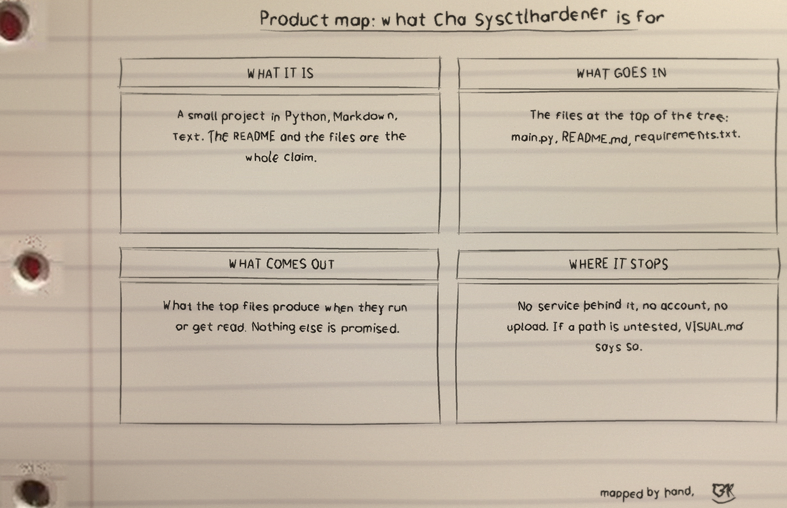

Cha Sysctlhardener is one of my projects. The README in the repo is short, so this page sticks to what the files themselves show.
What it is
Cha Sysctlhardener: 3 files, 251 counted lines across Python 230, Markdown 17, Text 4. One job, done in the open, in files you can read.
The biggest piece
main.py carries the most
lines. If the project grows, that file is where the growth
lands first, for better or worse.
The honest gap
No test files yet. That is the honest gap, and the roadmap in the visuals folder says what the first one should cover.
Run it
The repo README has the exact commands for this one. The shape is the shape for most of my projects: clone it, read the top file first so you know what will happen, then run it on something you do not mind breaking.
$ git clone https://github.com/ShadowGuard-AI/cha-sysctlhardener.git
$ cd cha-sysctlhardener
The code, as it sits in the repo
From main.py, line 16 on. I did
not tidy it for the page. What you see is what the file has.
class ConfigHardener:
"""
A class for hardening configuration files based on JSON schema policies.
"""
def __init__(self, config_file: str, policy_file: str, dry_run: bool = False):
"""
Initializes the ConfigHardener.
Args:
config_file: Path to the configuration file to harden.
policy_file: Path to the JSON schema policy file.
dry_run: If True, only show changes without applying them.
"""
self.config_file = config_file
self.policy_file = policy_file
self.dry_run = dry_run
self.config_data = None
self.policy_schema = NoneThe files that matter
| File | Lines |
|---|---|
main.py | 230 |
README.md | 17 |
requirements.txt | 4 |
Names doing the work: ConfigHardener, setup_argparse, main, __init__, load_config, load_policy, validate_config, remediate_config.
Drawn by hand
I sketch my projects on notebook paper so I have to understand them well enough to draw them. The full set, with the counts and how they were counted, is the cha-sysctlhardener-Visuals folder in the repo. Nothing is drawn over the binder holes. That is a rule, not a style.


